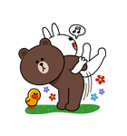

การตั้งหมาก
ตำแหน่งเริ่มต้นก่อนการเดินหมาก ผู้เล่นทั้ง 2 ฝ่ายนั่งหันหน้าเข้าหากัน วางกระดานไว้ตรงกลางระหว่างผู้เล่น หมากฮอสประเภทตัวหมาก 8 ตัว วางตำแหน่งหมากอยู่ที่ช่องตาเดินสีดำ แถวหลังสุด และแถวถัดขึ้นมา แถวละ 4 ตัว
การเดินหมาก
การเดินหมากเลือกเดินก่อนหรือหลังก็ได้ ต่อไปให้ผลัดกันเดินก่อนคนละ 1 กระดาน
การกินหมาก
การกินหมาก เกิดขึ้นได้เมื่อหมากของฝ่ายหนึ่งขวางทางเดินหมากของอีกฝ่ายหนึ่ง และมีตาว่างอยู่ในแนวเดียวกัน กับหมากที่ขวาง ฝ่ายที่ถูกขวางต้อง “กิน”
กฎ กติกา ว่าด้วยการเสมอ
ผู้แข่งขันทั้ง 2 ฝ่าย ผลแข่งขันจะเสมอกัน เกิดจากกรณีใดกรณีหนึ่ง
ต่อไปนี้
- การแข่งขันยังไม่มีผลแพ้ชนะ และคู่แข่งขันสมยอมให้เสมอกัน
- มีการเดิน “หมากล้อเลียน” กันเกินกว่า 3 ครั้ง
- มีการเดิน “หมากวนเวียน” ไปมา เป็นเวลานานพอสมควรแล้วยังไม่มีทีท่าว่าจะแพ้ชนะกัน ในกรณีนี้ผู้แข่งขันฝ่ายหนึ่งฝ่ายใดมีสิทธิขอจำกัดจำนวนครั้งที่จะเดินเพื่อยุติการแข่งขันได้

 59+ 54+
59+ 54+  9+ 39+ 11
9+ 39+ 11